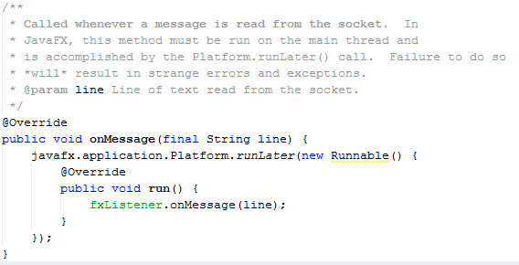
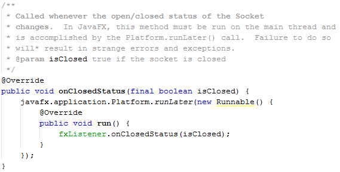
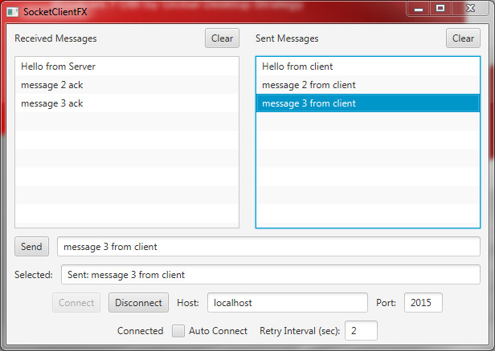
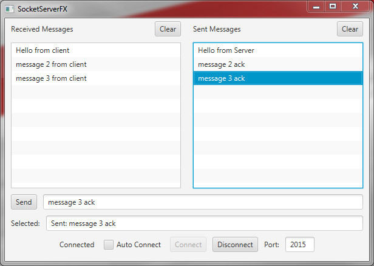

Overview
For a more thorough understanding of the method behind this madness, please consult the original article. Briefly stated, socket programming, especially in Java, often times lends itself to utilizing threads. To facilitate using sockets, both from the "client" and "server" side, an abstract class called GenericSocket.java was and is provided and, baring a few minor changes, remains quite similar to the original version. Just as in the Original JavaFX Script framework, The JavaFX UI is still not thread-safe and its scene graph must only be accessed through the JavaFX application thread. What has changed between old and new is the class and method name required to perform work on the JavaFX application thread.
Just like before, we've identified two methods associated with socket manipulations that need to perform work on the main thread. These abstract method calls are incorporated into the GenericSocket.java source and are specified in the SocketListener.java interface file:
public interface SocketListener {
public void onMessage(String line);
public void onClosedStatus(boolean isClosed);
}
Within GenericSocket.java, you'll see references to these method calls as follows:
/*
* The onClosedStatus() method has to be implemented by
* a sublclass. If used in conjunction with JavaFX,
* use Platform.runLater() to force this method to run
* on the main thread.
*/
onClosedStatus(true);
and
/*
* The onMessage() method has to be implemented by
* a sublclass. If used in conjunction with JavaFX,
* use Platform.runLater() to force this method to run
* on the main thread.
*/
onMessage(line);
As implied by these comments, JavaFX-specifc classes that extend the GenericSocket class and implement the SocketListener interface are required. Correspondingly two helper classes have been created: FxSocketClient.java and FxSocketServer.java. These extend the GenericSocket class and implement the SocketListener interface from the perspective of a JavaFX environment. Both classes override the onMessage() method like this:

Likewise, the onClosedStatus() method is implemented as follows:

As these two code snippets exhibit, we enclose our execution
requirements within a call to the Platform.runLater()
method, ensuring that it will be executed on the JavaFX
application thread. (For the Java 8 aficionados, you may
notice that these two methods could be converted to lambda
expressions. That exercise is left to the reader.) What
remains now is for any referencing JavaFX class to implement the SocketListener
interface.
To demonstrate the usage of FxSocketClient and FxSocketServer classes within JavaFX 8, this article provides two NetBeans projects represented by the screenshots that follow. By clicking on each image, you can start up the FxSocketClient and FxSocketServer applications via Java WebStart (assuming you have (1) the latest Java 8 installed and (2) you have a browser which allows Java applets to run. The last browsers standing are Internet Explorer 11 and Safari).
|
 |
 |
The user interface for these programs was created with the assistance of a terrific tool called the JavaFX Scene Builder. You can download the source code, including the UI (represented in FXML), here:
The javafx.concurrent Package
The intent of this article was to focus solely on the Platform.runLater()
method, however, it is important to note that JavaFX 2.x also
provides an additional means to create background tasks that
safely interact with the JavaFX application thread. Similar
in capability to the venerable java.util.concurrent
package (and in fact extending some of those classes), the javafx.concurrent
package also furnishes the ability to safely control the execution
and track the progress of the application code running in
background tasks. For an overview of their use, check out the
following article published as part of the Oracle documentation: Concurrency
in Java FX.